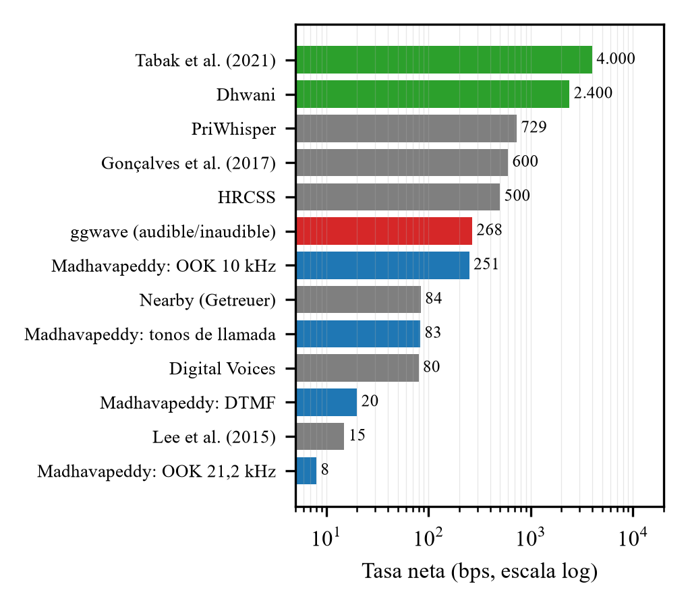
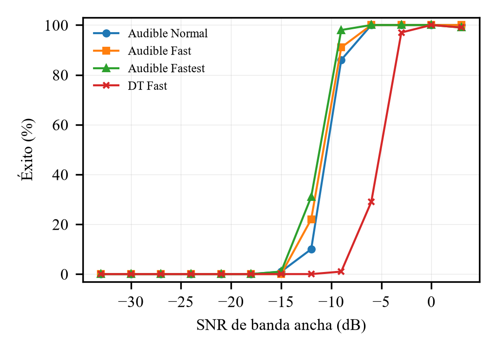

Resumen:La transmisión de datos por sonido permite comunicar dispositivos que solo cuentan con altavoz y micrófono, sin radio ni red. Este trabajo revisa los fundamentos físicos del canal acústico aéreo, las técnicas de modulación y codificación empleadas y los resultados cuantitativos publicados entre 2001 y 2026, que van de 8 bps a más de 47 kbps según la banda, la distancia y el hardware. Como caso de estudio se analiza ggwave, una biblioteca abierta de FSK multitono con corrección de errores Reed–Solomon, mediante lectura de su código fuente, un banco de pruebas propio con ruido gaussiano simulado y los datos de una evaluación independiente con más de 11 000 transmisiones reales entre teléfonos [3]. Se observa un compromiso sistemático entre tasa, alcance, robustez y audibilidad: los esquemas más rápidos dependen de bandas casi ultrasónicas, hardware específico y ecualización, mientras que los más robustos rara vez superan unos cientos de bps. Se identifican brechas (seguridad, adaptación al canal, validación en entornos reales) que orientan el desarrollo de una implementación propia, SpaceWases, que cifra y autentica los mensajes y, tras diagnosticar por aire la reverberación de una sala, usa símbolos de varias tramas como ggwave: en un portátil y una sala recibió 157 de 180 mensajes, frente a 9 de 180 de su primera versión.
Palabras clave:comunicación acústica, audio networking, FSK, OFDM, Reed–Solomon, canal multitrayecto, ggwave.
Abstract:Data-over-sound lets devices that only have a speaker and a microphone exchange information without radio or network infrastructure. This paper reviews the physics of the airborne acoustic channel, the modulation and coding techniques in use, and quantitative results published between 2001 and 2026, ranging from 8 bps to over 47 kbps depending on band, distance and hardware. The open-source library ggwave (multi-tone FSK with Reed–Solomon coding) is studied as a case through source-code analysis, a custom simulated-noise benchmark and data from an independent evaluation with more than 11,000 real smartphone transmissions [3]. A consistent trade-off between rate, range, robustness and audibility emerges. Gaps in security, channel adaptation and real-environment validation are identified to guide a new implementation, SpaceWases, which encrypts and authenticates messages and, after diagnosing room reverberation over the air, uses multi-frame symbols as ggwave does: on one laptop in one room it received 157 of 180 messages, against 9 of 180 for its first version.
Index Terms:acoustic communication, audio networking, FSK, Reed–Solomon, multipath channel, ggwave.
I. Introducción
La comunicación mediante sonido, denominada audio networking, emplea altavoces y micrófonos ya presentes en teléfonos, computadoras y dispositivos IoT para intercambiar datos sin infraestructura de radio [1]. Sus ventajas son el hardware ubicuo, el bajo consumo y la delimitación física natural del alcance, pues el sonido se atenúa con facilidad al atravesar paredes. Sus desventajas son la baja tasa de datos y la sensibilidad al ruido y a la reverberación. Los primeros módems acústicos para computación ubicua se documentaron a comienzos de los años 2000 [2], y la literatura reciente sigue señalando el mismo problema: la mayoría de los esquemas funciona en el laboratorio pero se degrada en entornos reales [3].
Las aplicaciones documentadas incluyen emparejamiento y pagos de proximidad sin NFC [11], verificación de cercanía entre dispositivos [12] y balizas de ubicación [1]. Este trabajo tiene tres objetivos: (i) resumir los fundamentos físicos y de comunicaciones del canal acústico; (ii) consolidar, con datos publicados y verificables, el estado del arte en tasa, alcance y robustez; y (iii) evaluar un sistema abierto representativo, ggwave [4], combinando análisis de código, mediciones propias y los resultados de un estudio independiente. El objetivo final es servir de base técnica para una implementación propia.
II. Metodología de la revisión
La literatura se localizó el 28 de octubre de 2026 con búsquedas web sobre arXiv, Crossref, ACM Digital Library, IEEE Xplore (por DOI), PoPETs y repositorios de los autores, con términos como acoustic data transmission, audio networking, near-ultrasonic communication y smartphone. Se incluyeron trabajos que reportan tasa de datos o tasa de error sobre aire con altavoces y micrófonos de consumo. Los metadatos bibliográficos (autores, título, publicación, páginas, DOI) se contrastaron con Crossref o con la página del editor; las cifras se tomaron de los resúmenes o del texto completo de cada artículo y se citan tal como se publicaron. No es una revisión sistemática exhaustiva: no se aplicó un protocolo PRISMA y es posible que existan trabajos relevantes no incluidos.
III. Fundamentos del canal acústico
A. Propagación y atenuación
En aire a 20 °C el sonido se propaga a unos 343 m/s [5]. En campo libre, la presión de una fuente puntual decae con la inversa de la distancia, es decir, unos 6 dB por cada duplicación de distancia [5]; la absorción del aire añade pérdidas que crecen con la frecuencia, lo que limita el alcance de los esquemas de alta frecuencia.
B. Presupuesto de enlace ilustrativo
Si la SNR a 1 m es S1, a una distancia d en campo libre vale S(d) = S1 − 20 log10(d/1 m). Pasar de 1 m a 20 m cuesta 26 dB, un valor comparable al alcance de 20 m que [3] reporta para la variante inaudible de ggwave en oficina. Como la transición de fallo a éxito de ggwave en simulación ocupa unos 6 dB (Sección VII-C), equivalente a una duplicación de la distancia, cabe esperar una caída abrupta con la distancia en vez de una degradación gradual. Este cálculo ignora reverberación, ruido ambiental y directividad, y es solo orientativo.
C. Multitrayecto y reverberación
En interiores, la señal llega al receptor por la ruta directa y por reflexiones. Una trayectoria reflejada que recorra 3 m más que la directa llega con un retardo de 3/343 ≈ 8,7 ms. Cuando este retardo es comparable a la duración del símbolo se produce interferencia entre símbolos; por eso los sistemas de baja tasa usan símbolos largos (decenas a cientos de milisegundos). Putz et al. identifican la propagación multitrayecto interior como la principal causa de fallo de los esquemas que evaluaron [3], y Tabak et al. recurren a ecualización adaptativa por la misma razón [7].
D. Banda audible, casi ultrasónica y hardware
El rango audible convencional va de 20 Hz a 20 kHz y la sensibilidad del oído es máxima entre aproximadamente 2 y 5 kHz [6]; transmitir en esa zona es eficaz pero molesto. Para evitarlo se emplean bandas cercanas a 18–22 kHz, apenas audibles para la mayoría de adultos, aunque dependientes de que el altavoz y el micrófono respondan allí [3], [7]. La respuesta en frecuencia de los altavoces y micrófonos integrados no es plana en esa región [7] y varía entre modelos de teléfono, por lo que el desempeño depende del par emisor–receptor [3].
IV. Modulación y codificación
A. Esquemas de modulación
La Tabla I resume las familias de modulación empleadas en los sistemas revisados. La modulación por desplazamiento de frecuencia múltiple (MFSK) es la más común por su robustez: para FSK binaria no coherente la probabilidad de error de bit es Pb = ½ exp(−Eb/2N0) [8], donde Eb/N0 es la energía por bit sobre la densidad espectral de ruido. Los esquemas coherentes (PSK, OFDM) alcanzan mayor eficiencia espectral, pero exigen sincronización y ecualización precisas [7], [8].
| Esquema | Idea | Ejemplos |
|---|---|---|
| OOK / ASK | Presencia o ausencia de portadora | Portadoras de 10 y 21,2 kHz [1] |
| DTMF | Par de tonos por símbolo | Telefonía [1] |
| MFSK | Un tono entre M por símbolo | ggwave, PriWhisper [3] |
| Chirp (CSS/BOK) | Barridos de frecuencia | Lee 2015, HRCSS [3] |
| DSSS + MFSK | Espectro ensanchado | Nearby [3], [12] |
| OFDM / PSK | Muchas subportadoras, coherente | Gonçalves [3], BatComm [13], UltraComm [14] |
| Coherente + ecualización | Estimación del canal | Tabak [7] |
B. Corrección de errores y límite de capacidad
Los códigos Reed–Solomon [10] añaden 2t bytes de paridad y corrigen hasta t bytes erróneos por bloque [8], lo que los hace adecuados frente a ráfagas de error. El límite teórico de capacidad de un canal con ancho de banda B y relación señal-ruido SNR es C = B log2(1 + SNR) [9]. Para B = 4500 Hz (la banda audible usada por ggwave) y SNR = 10 dB, C ≈ 15,6 kbps; con SNR = 0 dB, C = 4,5 kbps. Los sistemas prácticos revisados operan en el rango de unos pocos a algunos cientos de bps, es decir, uno o dos órdenes de magnitud por debajo, a cambio de robustez y simplicidad.
V. Estado del arte: datos publicados
La Tabla II reúne cifras reportadas por los propios autores o por evaluaciones independientes. Las condiciones difieren (distancia, hardware, entorno), por lo que las cifras no son directamente comparables y se citan tal como se publicaron.
| Sistema (año) | Banda | Tasa y condiciones | Fuente |
|---|---|---|---|
| DTMF (2005) | Audible | 20 bps a 3 m; error de símbolo 0,006 % | [1] |
| OOK 10 kHz (2005) | 10 kHz | 251 bps a 30 cm; BER 4,4·10−5 | [1] |
| OOK 21,2 kHz (2005) | 21,2 kHz | 8 bps a 3,4 m en oficina | [1] |
| Tonos de llamada (2005) | Audible | 83 bps a 2 cm; BER ≤ 0,001 % | [1] |
| Digital Voices (2001) | 1–3 kHz | 80 bps netos | [3] |
| Dhwani (2013) | n/d | hasta 2,4 kbps | [11] |
| Nearby (2018) | 18,5–20 kHz | 84 bps netos | [3], [12] |
| PriWhisper (2014) | 9–17 kHz | 729 bps netos | [3], [15] |
| Tabak et al. (2021) | 18–20 kHz | 4 kbps hasta 5 m | [7] |
| ggwave (2020) | 1,8–6,3 / 15–19,5 kHz | 268 bps netos | [3], [4] |
| BatComm (2020) | Ultrasónica | >47 kbps a 10 cm; alcance de sala (~2 m) según el resumen | [13] |
| UltraComm (2024) | ≤ 20 kHz | hasta 16,24 kbps | [14] |

Tres observaciones se desprenden de los datos. Primero, las tasas netas de los sistemas robustos están entre 8 y unos 750 bps, y los kilobits por segundo aparecen con ecualización coherente en banda casi ultrasónica [7], con hardware específico o rango muy corto [13], [14] o con técnicas especiales como Dhwani [11]. Segundo, la distancia importa: [13] reporta más de 47 kbps a 10 cm, mientras que a metros las tasas caen en uno o dos órdenes de magnitud. Tercero, Putz et al. revisaron 31 estudios y ninguno ofrecía código accesible [3], lo que dificulta reproducir y comparar resultados.
A. Evaluación independiente en teléfonos reales
Putz et al. [3] re-implementaron o reunieron ocho sistemas y los probaron con más de 11 000 transmisiones entre teléfonos, en oficinas y en una cámara anecoica. Con altavoz y micrófono de estudio a 50 cm, seis esquemas lograron 0 % de error total y uno 0,8 %. En oficina, todos salvo Digital Voices mantuvieron menos de 0,5 % hasta 10 cm, y el error creció con la distancia por multitrayecto y ruido. Entre 21 pares de teléfonos, el error de varios esquemas varió de 3 % a 32 %, y colocar el teléfono en el bolsillo degradó a todos. Estas cifras son la referencia más cercana a un entorno real y sirven para contrastar los resultados en simulación.
B. Compromisos de diseño
| Opción | Ventaja | Limitación |
|---|---|---|
| Banda audible | Cualquier altavoz y micrófono; símbolos bien reproducidos | Audible y molesta; ggwave audible llegó a 1 m en oficina y fue inutilizable con ruido ambiental [3] |
| Casi ultrasónica (18–22 kHz) | Silenciosa; ggwave inaudible llegó a 20 m en oficina [3] | Depende de la respuesta del hardware [7] |
| MFSK no coherente | Simple y robusto | Cientos de bps como máximo [3] |
| OFDM / coherente | Kilobits por segundo [7], [13], [14] | Exige ecualización, corto alcance o hardware específico |
VI. Seguridad y privacidad
El canal acústico es de difusión: cualquier micrófono en el alcance recibe la señal. Dhwani [11] y PriWhisper [15] abordan la confidencialidad con interferencia deliberada (jamming amistoso) en lugar de claves. En el plano de la privacidad, Mavroudis et al. analizaron aplicaciones Android que usan balizas ultrasónicas y mostraron ataques como la desanonimización de usuarios de Tor, la inyección de balizas falsas y la fuga de información privada [16]. Los autores señalan que, sin soporte del sistema operativo, una aplicación con balizas ultrasónicas necesita acceso total al micrófono, y proponen estandarizar las balizas y ofrecer permisos que permitan suprimir frecuencias ultrasónicas.
VII. Estudio de caso: ggwave
A. Arquitectura
ggwave [4] es una biblioteca en C/C++ con licencia MIT (commit 060aec7, 16/04/2026) que genera y analiza las ondas crudas; el usuario aporta el audio. Usa una FFT real de Ooura [17] y un código Reed–Solomon de terceros. Define 12 protocolos predefinidos en cuatro familias (audible, ultrasónica, DT y MT) con tres velocidades. A 48 kHz y 1024 muestras por trama, una trama dura 21,33 ms y cada contenedor de la FFT ocupa 46,875 Hz.
Cada byte se divide en dos nibbles y cada nibble elige uno de 16 tonos dentro de su propio grupo; un símbolo de 3 bytes activa 6 tonos de 96 posibles. La carga se mezcla con una secuencia fija de 64 bytes (XOR) para repartir la energía, lo que no constituye cifrado. El mensaje va entre dos marcadores de 16 tramas con patrón de tonos alternados (Fig. 2); el receptor los detecta comparando contenedores vecinos con un umbral de razón (3,0 por defecto). La longitud se protege con 2 bytes de paridad, y la carga con ECC = 2 bytes si L < 4 y máx(4, 2⌊L/5⌋) en otro caso (≈40 % de redundancia). El máximo es de 140 bytes en modo variable.
B. Tasas derivadas del código
La duración total es (2·16 + extra·⌈(L + 3 + ECC)/bytesPerTx⌉·framesPerTx) tramas. Con ello se obtienen las cifras de la Tabla IV, que se verificaron compilando la biblioteca: las duraciones medidas coincidieron exactamente. Las 32 tramas de marcadores (≈ 0,68 s) penalizan los mensajes cortos. La tasa bruta máxima, 46,9 B/s (375 bps) en Fastest, equivale a solo el 2,4 % de la capacidad de Shannon de la Sección IV-B para SNR = 10 dB, lo que ilustra el margen que se cede por robustez.
| Protocolo | Banda (Hz) | Bruta (B/s) | L = 16 B | L = 140 B |
|---|---|---|---|---|
| Audible Normal | 1875–6375 | 15,6 | 2,41 s / 6,6 | 13,55 s / 10,3 |
| Audible Fast | 1875–6375 | 23,4 | 1,83 s / 8,7 | 9,26 s / 15,1 |
| Audible Fastest | 1875–6375 | 46,9 | 1,26 s / 12,7 | 4,97 s / 28,2 |
| Ultrasound (3 vel.) | 15000–19500 | igual | igual | igual |
| DT Normal | 1125–2625 | 5,2 | 5,48 s / 2,9 | 38,89 s / 3,6 |
| DT Fast | 1125–2625 | 7,8 | 3,88 s / 4,1 | 26,15 s / 5,4 |
| DT Fastest | 1125–2625 | 15,6 | 2,28 s / 7,0 | 13,42 s / 10,4 |
Celdas: duración / tasa efectiva en B/s. Cálculo propio y medición con el código de [4].
C. Mediciones en canal simulado
Se codificaron mensajes aleatorios de 16 bytes (volumen 25 %, formato F32, 48 kHz) y se les sumó ruido blanco gaussiano con SNR calculada sobre la potencia media en toda la banda (0–24 kHz), con 100 intentos por punto y una semilla fija. La transición de fallo a éxito total ocurre en unos 6 dB (Fig. 3): entre −12 y −6 dB en los protocolos audibles y entre −6 y −3 dB en DT Fast; por debajo de −18 dB el éxito fue 0 %. El umbral es bajo porque la SNR se define sobre 24 kHz mientras cada tono se integra en 46,9 Hz (ganancia de procesamiento del orden de 27 dB, pues 24 000/46,9 ≈ 512). Audible Fastest resultó más robusto que Normal a −9 dB (98 % frente a 86 %), contrario a lo esperable, y no se investigó la causa.

Con señal digital sin ruido, DT Fast no se decodificó en ninguna de las siete longitudes y Audible Normal falló una vez; con ruido añadido DT Fast sí funcionó, posiblemente porque el detector de marcadores se confunde cuando los contenedores vecinos son casi cero (hipótesis no confirmada). Estas simulaciones no incluyen reverberación, altavoz ni micrófono, por lo que describen el decodificador y no el alcance en una sala.
D. Resultados independientes en teléfonos
En la evaluación de [3], ggwave, con tasa neta de 268 bps en sus variantes audible (1,8–6,3 kHz) e inaudible (15–19,5 kHz), logró 0 % de error total a 50 cm con equipo de estudio y en todos los entornos probados (oficina, sala de reuniones, aula), junto con Lee et al. y Nearby. En oficina, la variante inaudible funcionó hasta 20 m y la audible solo hasta 1 m; esta última quedó inutilizable con ruido ambiental, mientras que la inaudible fue robusta a todos los ruidos probados salvo el bolsillo. Los 268 bps (33,5 B/s) están en el mismo orden que las tasas derivadas del código (hasta 28,2 B/s en Fastest); no se verificó la longitud de carga usada en [3]. La simulación con ruido blanco no reproduce la degradación que el ruido real de oficina causa al modo audible, por lo que ambos resultados son complementarios.
VIII. Implementación propia: SpaceWases
A. Diseño
SpaceWases es un módem acústico escrito desde cero en Python (NumPy y biblioteca estándar) y portado a JavaScript para ejecutarse en el navegador. ggwave [4] se tomó como referencia de diseño; no se copió código suyo. La capa física es MFSK no coherente a 48 kHz: dos grupos de 16 tonos (contenedores 40+6k y 43+6k, de 1875 Hz a unos 6,2 kHz) transmiten un nibble cada uno, es decir, un byte por símbolo. Como en ggwave, cada símbolo dura varias tramas de 1024 muestras con el mismo tono (6 en el perfil robust, 128 ms; 3 en normal y fast, 64 ms); la primera trama hace de guarda frente a la reverberación del símbolo anterior y el receptor suma las demás antes de la FFT. La tasa bruta es de 62,5 bps en robust y 125 bps en los otros dos. Un chirp lineal de 150 ms (1,5–6 kHz) abre la señal y su versión invertida la cierra; si la posición que dan no decodifica, el receptor prueba la ventana de análisis desplazada −256, −512 y +256 muestras.
Cada transmisión empieza con un bloque de longitud (perfil y longitud total, 3 bytes con 6 de paridad Reed–Solomon propia), idea tomada de ggwave, y sigue con fragmentos de hasta 48 bytes sin relleno, cada uno con una cabecera de 6 bytes y 20, 32 o 20 bytes de paridad según el perfil. Sin clave, una etiqueta HMAC-SHA256 de 4 bytes con clave vacía detecta errores pero no autentica. Con clave se cubren dos carencias señaladas en la Sección VII: la clave pasa por PBKDF2-HMAC-SHA256 (600 000 iteraciones, sal fija), el mensaje se cifra con un flujo HMAC-SHA256 en modo contador y una etiqueta de 8 bytes cubre cabecera y texto cifrado. Cada mensaje lleva una sesión de 10 bytes (marca de tiempo y nonce); un ReplayGuard opcional del receptor rechaza sesiones ya vistas o fuera de una ventana de 120 s. Cada bloque se valida por separado y un mensaje puede enviarse N veces para que los fragmentos buenos de una copia completen los dañados en otra. La web recibe como ggwave: detecta el chirp inicial, graba hasta el final y decodifica. Los primitivos criptográficos son estándar, pero la construcción es propia y no ha sido auditada. El código se verifica con 46 pruebas en Python y 54 en JavaScript, incluida la interoperabilidad entre ambas implementaciones.
B. Diagnóstico por aire
Una primera versión, con símbolos de una sola trama (26,7 ms incluido un prefijo cíclico de 5,3 ms), decodificaba el 100 % en simulación desde −10 dB, pero por aire solo 9 de 180 mensajes. La prueba usó el altavoz y el micrófono integrados de un portátil en una sala, con el volumen del sistema fijo, mensajes de 16 bytes y seis ganancias digitales de 1 a 0,03. El diagnóstico descartó la interfaz de audio del sistema operativo (tres interfaces fallaron igual) y la deriva de reloj (≤ 9 ppm). Encontró una respuesta altavoz–micrófono que cae 10–30 dB por encima de 1 kHz, una precisión por tono muy irregular (100 % entre 1,9 y 2,6 kHz, pero 8–22 % en algunos tonos de 3,3 a 6,1 kHz) y, sobre todo, que el 47 % de los nibbles erróneos copiaban el símbolo anterior (54 de 116, frente a unos 8 esperables al azar): la cola de reverberación duraba más que el prefijo. Restar parte de la potencia del símbolo anterior subió por aire el acierto de nibble de 72 a 85 %, pero en simulación con ruido blanco bajó el éxito de robust a −10 dB de 100 a 62 %, así que se descartó. Alargar el símbolo y sumar sus tramas sin la primera, como hace ggwave, llevó el acierto de byte de 0,44 con una trama a 0,86 con tres y a 0,93–0,95 con seis, lo que fijó el diseño actual.
C. Resultados
| Versión | robust | normal | fast | Total |
|---|---|---|---|---|
| Una trama por símbolo | 7 | 1 | 1 | 9/180 |
| Varias tramas, bloques de 48 B | 47 | 47 | 48 | 142/180 |
| Sin relleno, paridad proporcional | 52 | 33 | 21 | 106/180 |
| Sin relleno, paridad completa (actual) | 54 | 50 | 53 | 157/180 |
Aire: un portátil, una sala, 10 ensayos por ganancia. Ninguna fila es simulación.
La Tabla V resume las series completas por aire. Quitar el relleno de los bloques con paridad proporcional a su tamaño empeoró normal y fast: el relleno de ceros que se eliminó casi nunca fallaba (el tono más grave era el mejor recibido), de modo que la paridad efectiva para los datos reales había sido mayor. Con la paridad completa del perfil, la versión actual recibe 157 de 180; a la ganancia mínima (0,03) cae a 5, 9 y 8 de 10. Sobre otras 45 grabaciones por aire, la búsqueda de alineación pasó de 44 a 45 mensajes recibidos. En simulación con ruido blanco (16 bytes, 100 intentos por punto, SNR sobre toda la señal), los tres perfiles decodifican el 100 % desde −12 dB, el piso del banco, por lo que el umbral queda sin medir. La tasa neta con 16 bytes es de 17,4, 27,8 y 33,4 bps, inferior a la que ggwave obtiene para 16 bytes con símbolos de duración similar (Tabla IV, 53–102 bps), porque SpaceWases transmite un byte por símbolo y ggwave tres. No se probó ggwave por aire en el mismo equipo, así que no hay comparación directa de robustez.
IX. Discusión y líneas de trabajo
Los datos revisados muestran un compromiso entre tasa, alcance, robustez y audibilidad (Tabla III). Los sistemas MFSK como ggwave priorizan la robustez y la simplicidad (detección no coherente por magnitud de la FFT), a costa de unos 270 bps; los sistemas OFDM y coherentes alcanzan kilobits a corta distancia pero dependen del hardware [7], [13]. La banda audible es molesta y vulnerable al ruido ambiental [3]; la casi ultrasónica es más limpia pero dependiente del dispositivo.
Brechas identificadas para una implementación propia: (i) validación real, con mediciones altavoz–micrófono propias en distintos entornos y distancias, pues la mayoría de los trabajos solo reporta casos favorables [3]; (ii) seguridad, ya que ggwave solo ofrece un XOR sin cifrado ni autenticación, mientras que [11] y [15] proponen mecanismos de confidencialidad propios del canal y [16] documenta ataques reales; (iii) adaptación al canal, con estimación de SNR y elección dinámica de protocolo y redundancia; (iv) fiabilidad de enlace, con fragmentación, confirmaciones y retransmisión para superar los 140 bytes; y (v) robustez de implementación, corrigiendo el comportamiento con señales sin ruido observado en las pruebas.
X. Amenazas a la validez y trabajo pendiente
Cifras de terceros. Provienen de condiciones distintas (hardware, distancia, entorno, definición de tasa neta o bruta) y no son comparables entre sí sin reservas. Las de [13] y [14] son mejores casos tomados de sus resúmenes. Mediciones propias. El ruido es blanco, aditivo y sin reverberación; hay una sola semilla aleatoria y 100 intentos por punto (intervalo de confianza de ±10 % cerca del 50 %). Prueba acústica real pendiente. Una prueba preliminar de humo con altavoz y micrófono de un equipo de escritorio decodificó correctamente 3 de 3 mensajes con Audible Fastest, pero la serie completa se realizó en condiciones no controladas (volumen y ruido variables) y se descartó. Queda pendiente repetirla con volumen y distancia fijos, varios niveles de ruido y varios dispositivos, y reportar tasa de éxito frente a SNR acústica medida. SpaceWases. Las series por aire (Sección VIII) usan un solo portátil y una sala, con un volumen del sistema fijo pero no medido, mensajes de 16 bytes y 10 ensayos por punto; varias de sus decisiones de diseño (número de tramas, paridad) se tomaron con esas mismas mediciones, por lo que pueden estar ajustadas a ese equipo. Faltan otros dispositivos, distancias y salas, y la recepción en vivo desde el navegador solo se probó con grabaciones reales procesadas fuera de él. No se comparó con ggwave en las mismas condiciones, por lo que no se afirma ventaja alguna. La SNR del banco de SpaceWases se define sobre la potencia media de toda la señal, incluidos los chirps, y no coincide exactamente con la de la Sección VII-C.
XI. Consideraciones de licencia
ggwave se distribuye bajo licencia MIT [18], que permite usar, copiar, modificar, publicar y vender el software siempre que se conserven el aviso de derechos de autor y el texto de la licencia. El código de terceros incluido mantiene sus propias licencias (Reed–Solomon de M. Lubinets, MIT; FFT de T. Ooura [17]; dr_wav, dominio público o MIT-0). Una versión derivada debe conservar tales avisos y atribuir el proyecto original. Esta sección no constituye asesoría jurídica.
XII. Conclusiones
La comunicación por ondas audibles es viable y simple de desplegar, pero ofrece tasas modestas: las tasas netas de los sistemas robustos publicados van de 8 a unos 750 bps, y los kilobits aparecen con ecualización coherente, hardware específico o distancias muy cortas. El canal aéreo interior, con multitrayecto y variación entre dispositivos, es el principal obstáculo [3]. ggwave es un representante maduro de los esquemas MFSK con FEC: sus tasas derivadas del código se verificaron por medición, su decodificador soporta SNR de banda ancha de −9 dB en simulación y, según una evaluación independiente, mantiene errores muy bajos en teléfonos reales, aunque la variante audible sufre con ruido ambiental. La implementación propia, SpaceWases, resuelve en software las brechas de cifrado, repetición y fragmentación. Su primera versión decodificaba en simulación pero fallaba por aire (9 de 180); el diagnóstico mostró que la reverberación de la sala, más larga que el símbolo, era la causa principal, y adoptar símbolos de varias tramas como ggwave llevó el resultado a 157 de 180 en el mismo equipo, a costa de una tasa neta de 17–33 bps. Quedan abiertas la validación en otros dispositivos y salas y la adaptación al canal.
Referencias
[1] A. Madhavapeddy, D. Scott, A. Tse y R. Sharp, “Audio networking: The forgotten wireless technology,” IEEE Pervasive Comput., vol. 4, no. 3, pp. 55–60, jul.–sep. 2005, doi: 10.1109/MPRV.2005.50.
[2] C. V. Lopes y P. M. Q. Aguiar, “Acoustic modems for ubiquitous computing,” IEEE Pervasive Comput., vol. 2, no. 3, pp. 62–71, jul.–sep. 2003, doi: 10.1109/MPRV.2003.1228528.
[3] F. Putz, P. Fortmann, J. Frank, C. Haugwitz, M. Kupnik y M. Hollick, “Evaluating acoustic data transmission schemes for ad-hoc communication between nearby smart devices,” ACM Trans. Internet Things, vol. 7, no. 1, art. 8, feb. 2026; arXiv:2602.02249.
[4] G. Gerganov, “ggwave: Tiny data-over-sound library,” GitHub, 2020. [En línea]. Disponible: https://github.com/ggerganov/ggwave (commit 060aec7, consultado el 28 oct. 2026).
[5] L. E. Kinsler, A. R. Frey, A. B. Coppens y J. V. Sanders, Fundamentals of Acoustics, 4.ª ed. Nueva York, NY, EE. UU.: Wiley, 2000.
[6] Acoustics — Normal equal-loudness-level contours, ISO 226:2003, 2003.
[7] G. Tabak, X. E. Lin y A. C. Singer, “High data rate near-ultrasonic communication with consumer devices,” en Proc. EUSIPCO, 2021; arXiv:2103.11261.
[8] J. G. Proakis y M. Salehi, Digital Communications, 5.ª ed. Nueva York, NY, EE. UU.: McGraw-Hill, 2008.
[9] C. E. Shannon, “A mathematical theory of communication,” Bell Syst. Tech. J., vol. 27, no. 3, pp. 379–423, 1948.
[10] I. S. Reed y G. Solomon, “Polynomial codes over certain finite fields,” J. Soc. Ind. Appl. Math., vol. 8, no. 2, pp. 300–304, 1960.
[11] R. Nandakumar, K. K. Chintalapudi, V. Padmanabhan y R. Venkatesan, “Dhwani: Secure peer-to-peer acoustic NFC,” en Proc. ACM SIGCOMM, 2013, pp. 63–74, doi: 10.1145/2486001.2486037.
[12] P. Getreuer, C. Gnegy, R. F. Lyon y R. A. Saurous, “Ultrasonic communication using consumer hardware,” IEEE Trans. Multimedia, vol. 20, no. 6, pp. 1277–1290, 2018, doi: 10.1109/TMM.2017.2766049.
[13] Y. Bai, J. Liu, L. Lu, Y. Yang, Y. Chen y J. Yu, “BatComm: Enabling inaudible acoustic communication with high-throughput for mobile devices,” en Proc. 18th ACM Conf. Embedded Networked Sensor Syst. (SenSys), 2020, pp. 205–217, doi: 10.1145/3384419.3430773.
[14] G. Zhang, X. Ji, X. Zhou, D. Qi y W. Xu, “Ultrasound communication using the nonlinearity effect of microphone circuits in smart devices,” ACM Trans. Sens. Netw., vol. 20, no. 3, pp. 1–22, 2024, doi: 10.1145/3631120.
[15] B. Zhang, Q. Zhan, J. Wang, K. Ren, C. Wang y D. Ma, “PriWhisper: Enabling keyless secure acoustic communication for smartphones,” IACR Cryptol. ePrint Arch., Rep. 2013/581, 2013.
[16] V. Mavroudis, S. Hao, Y. Fratantonio, F. Maggi, C. Kruegel y G. Vigna, “On the privacy and security of the ultrasound ecosystem,” Proc. Privacy Enhancing Technol., vol. 2017, no. 2, pp. 95–112, 2017, doi: 10.1515/popets-2017-0018.
[17] T. Ooura, “General purpose FFT (Fast Fourier/Cosine/Sine Transform) package,” 1996–2001. [En línea]. Disponible: https://www.kurims.kyoto-u.ac.jp/~ooura/fft.html
[18] Open Source Initiative, “The MIT License.” [En línea]. Disponible: https://opensource.org/license/mit